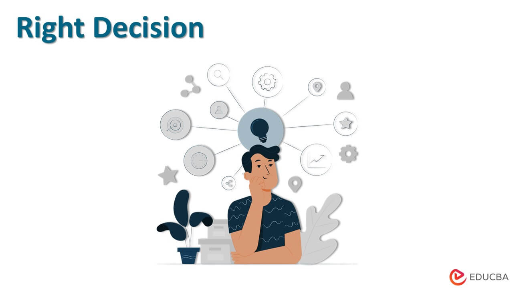

Review's and Work Experience
Joshua’s Dedication to Continuous Improvement
An employee committed to personal and professional growth.
Joshua Elvis Mendonza has been a shining example of dedication and continuous improvement since joining our team. His commitment to learning new skills and staying updated with the latest industry trends is truly commendable. Joshua doesn't just seek out opportunities for his own growth but also actively shares his knowledge with colleagues, fostering a culture of collaboration and mutual support
Joshua’s Stellar Project Management Skills

Exceptional leadership and teamwork in project execution.
Joshua Elvis Mendonza demonstrated exceptional project management skills during our recent initiative. His ability to coordinate tasks, manage timelines, and ensure clear communication across teams was crucial to the project's success. Joshua’s leadership kept the team motivated and focused, even under tight deadlines
Joshua’s Unwavering Ethical Standards
A commitment to integrity in every aspect of work
Throughout his time with us, Joshua has consistently demonstrated an unwavering commitment to ethical standards, even when faced with challenging decisions. His transparency and honesty have earned the trust of both clients and colleagues. During a particularly complex situation, Joshua navigated the challenges with grace, ensuring that our actions aligned with the highest ethical principles.
My Review: A Journey of Growth and Collaboration
An enriching experience filled with learning, leadership, and teamwork.
My time at as an Intern has been an incredible journey of growth, both professionally and personally. From the very beginning, I was encouraged to dive into new challenges, which has significantly expanded my skill set and deepened my understanding of the industry. The collaborative culture here has been particularly rewarding; working alongside such talented and supportive colleagues has made every project not just a task, but a learning opportunity. One of the highlights of my experience has been leading the [specific project or initiative], where I had the chance to apply my project management skills and work closely with an amazing team. Together, we navigated tight deadlines and complex challenges, ultimately delivering results that we’re all proud of. Ethics and integrity are core values that I hold dear, and I’ve appreciated how [Company Name] has consistently supported these principles. Whether it was making tough decisions or ensuring transparency in our processes, I’ve always felt aligned with the company’s commitment to doing what’s right. What truly sets this experience apart for me is the sense of community and camaraderie. The support from my peers and the encouragement from leadership have been instrumental in my success. It’s not just about achieving goals; it’s about achieving them together, as a team. I’m grateful for the opportunities I’ve had here and look forward to continuing to contribute to this dynamic and inspiring environment